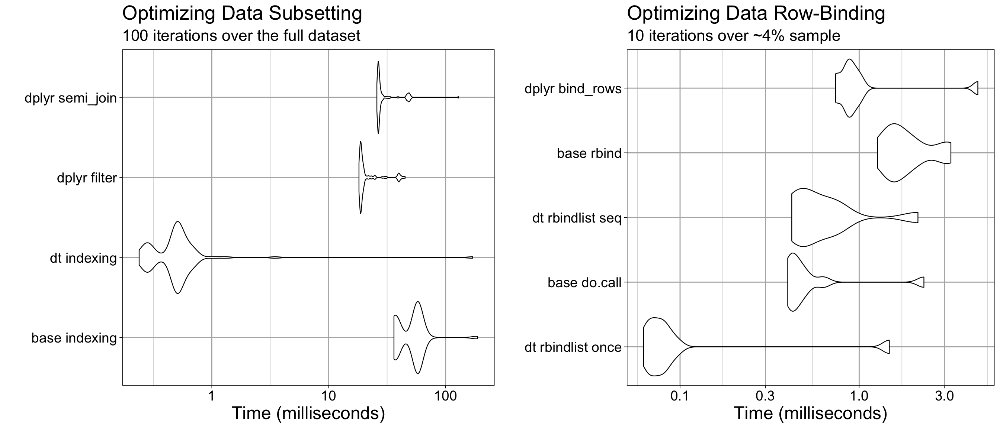

Preparation of the 2023 Format Raw Data
Prepared By: Shelby Golden, M.S. from the Yale School of Public Health Data Science and Data Equity team
Date Created: October 2025
Date Updated: July 16th, 2026
Overview
The project objectives were as follows:
REVIEW: Evaluate the raw data and previously outlined cleaning, validation, and harmonization methods employed by Dr. Insang Song for accuracy and identify opportunities for improvement.
PREPARATION: Implement identified improvements to prepare the dataset for analysis and distribution to qualifying collaborators.
METRICS: Calculate the metrics necessary for dynamic visualization.
Additionally, the project Principal Investigator (PI), Professor Yusuf Ransome, requested the pipeline be reproducible for future collaborators and readily adaptable to potential changes in project scope.
Following receipt of the raw data in Summer 2025, a review was conducted and findings were compared against the original methodology provided by Dr. Song. When an updated dataset was subsequently delivered in May 2026, the pipeline was expanded to accommodate two designated variations: the 2023 Format and the 2026 Format.
This document provides an overview of the methodological changes implemented in response to the 2023 Format “Review” report findings. The first drafts of these algorithms are described alongside an assessment of their performance and areas for improvement. General lessons learned throughout this process, such as strategies for optimizing algorithm speed and accuracy, are also discussed.
Results generated from this pipeline were used for the Summer 2025 dashboard prototype developed by Gordon Tu.
Important Considerations
Selected code excerpts are referenced below. All snippets are drawn from scripts saved to the “Code/” directory, each prefixed by a descriptor indicating the step to which they apply:
Clean Raw Data_Step *: A discrete step in the methods pipeline outlined below. Additional classifiers may indicate whether the script was designed for use on the High Performance Computer (HPC) and/or whether it applies to the 2023 or 2026 version of the raw data.
Archival of Original Scripts
Given the time constraints of the Summer 2025 prototype launch, algorithm performance and accuracy were not improved in this iteration, and not all 2023 Formatted data could be processed — either due to algorithm limitations or time constraints.
Following the prototype release, select original scripts reflecting the step-wise methods were formalized and published on GitHub in preparation for processing the remaining 2023 Formatted data. However, upon receipt of the 2026 Format in Spring 2026, much of the pipeline was overhauled directly, and cleaning the original scripts for certain steps was not prioritized.
Any scripts from this pipeline that have been made available are retained for posterity only. Users should refer to the 2026 versions as the most accurate and reproducible implementation of this process.
Those seeking to understand the improvements made to these methods for the 2026 Format should refer to the corresponding “Preparation” report.
Ignored Files
Individual-level files are withheld from GitHub and Git tracking in accordance with the Data Use Agreement (DUA) with the data provider. Many of these are stored in **/KEEP LOCAL/ directories or are explicitly listed under the “Project-Specific Exclusions” section of the .gitignore file.
Most files are available on the SOCAH Lab OneDrive for the project, while others are user-specific and do not need to be shared. If there are local-only files for this project, they will be added to the “Church-Closures-Dashboard GitHub LOCAL ONLY Files” directory. This directory will contain README.md files specifying the intended use and filepath for each file.
If you do not have access to the SOCAH Lab OneDrive, carefully follow the codebase instructions to establish the repository and replicate results on your own device. Raw data access instructions may vary depending on your institution.
Environment Reproducibility
Results were produced using R (v4.5.2), RStudio (v2026.01.1+403), and Quarto (v1.8.27). The renv package (v1.1.4) is included to reproduce the coding environment, capturing all relevant packages and their versions. If issues arise when running the scripts, verify that the environment is initialized and that the correct versions of R, RStudio, and Quarto are being used.
First-time users should initialize the environment to install all required packages and ensure a reproducible coding environment. To do so:
- In the command-line application (i.e., Terminal for Macs or Git Bash for Windows) navigate to the codebase file location.
Launch the project by opening the
*.Rprojfile in RStudio.In the R console, activate the environment by running the following lines of code:
Note
If you are asked to update packages, say no.renv is intended to recreate the same environment under which the project was created, making it reproducible. You are ready to proceed when running renv::restore() gives the output:
If you experience any trouble with this step, you might want to confirm that you are using R (v4.5.2) in the RStudio (v2026.01.1+403) and Quarto (v1.8.27). You can also read more about renv in their vignette 1.
Methods
Approach and Methodological Objectives
The following pipeline was designed to address two primary goals:
Produce a cleaned and validated form of the raw data suitable for dynamic visualization at the finest regional resolution: block groups.
Associate each address with census boundaries defined during the 2000, 2010, and 2020 decennial years, including block group, tract, county, state, and ZIP Code Tabulation Areas (ZCTAs).
Documentation on the expected accuracy of geocoordinates provided in the raw data was not made available by the data distributor. It was therefore considered important to compare the raw geolocations against a trusted database in order to associate verified geolocations and assess the scope of error in the raw form. While not the most accurate approach, address-based database matching is a generally accepted method for confirming approximate geocoordinates 2.
Each address’s geolocation coordiantes can be used to annotate each entry with the respective decennial years census boundary via point-in-polygon geocoding. The U.S. Census Bureau TIGER/Line shapefiles containing the required census boundary information provide corresponding files for decennial years requested: 2000, 2010, and 2020. However, this technique can be computationally costly; resulting in maxing in memory limits or causing preclusively slow loading if not handled strategically.
During the raw data review, it was noted that typographical errors resulted in duplicate address entries, where the associated open/closure years remained unique. Ideally, these errors would be cleanly reconciled to produce a concise dataset free of unnecessary redundancies. However, the presence of address variants is not precluding to the overall goals of this project. Mitigating these variations is nonetheless worthwhile to minimize unnecessary computational costs during geocoding and subsequent metric summarization across all addresses. Therefore, an attempt will be made to responsibly consolidate addresses using string similarity matching. Additional resolution is expected when address validation is done against a trusted database.
Special Considerations for PO Boxes
The raw data review revealed several notable special cases, detailed in subsequent sections. One of particular importance to downstream analysis involves addresses that at some point filed under a PO Box.
Later in the analysis, religious organizations are classified as closed if they did not file for four consecutive years during the observed period; organizations that subsequently resumed filing are classified as reopened. Closures are further differentiated into two categories: those that stopped operations entirely and closures due to relocation. Relocated organizations remained operational but moved outside the community, thereby resulting in a loss of social benefits to that community.
During the raw data review, two problems were identified:
The method employed by Dr. Insong removed all PO Box entries without removing the other addresses associated with the same business. Because the reported dates were unique across entries, this was expected to skew results, affecting approximately 12% of businesses.
Geocoordinates listed for PO Boxes sometimes corresponded exactly with an associated physical address. Because the validity of this association cannot be confirmed, it introduces a potential source of bias that may result in the misclassification of organizations within the “closure due to relocation” category.
For these reasons, verifying the geolocation of a PO Box is treated as zero-sum, whereas the inability to verify geocoordinates for a physical address is not considered critical. Under the following three conditions, all entries associated with a business are removed:
Geocoordinates are absent and could not be recovered through address-based validation, preventing geocoding.
address_line_1is missing, preventing verification that the geocoordinates correspond to the institution itself rather than a general location within that ZIP code.PO Box entries could not be assigned valid geocoordinates through address-based geocoding.
As a final step, following cleaning and validation and prior to metric calculation, PO Box entries with verified geocoordinates will be matched to a qualifying physical address. The critical assumption is that if a physical address exists within a nearby radius, the institution can reasonably be assumed to be operating at that location.
If no qualifying match is found, or the PO Box is too far from any nearby address, all entries associated with that business will be removed. Matching will also account for both spatial and temporal proximity; physical addresses that fall within range but are separated by intervening entries located far from the PO Box may not qualify.
A Step-Wise Framework
To acheive these goals, sequential steps were outlined, each building on the results of the preceding steps.
Step 1: Address Deduplication via String Similarity Matching
TipComputational Dependencies and Custom Functions
All packages required for this step are documented in the SET UP THE ENVIRONMENT section of “Clean Raw Data_Step 1_2023 Format.R”. Custom functions used throughout the script are in “Support Functions/For Step 1_2023 Format.R”.
Different uniquely listed address line 1 (address_line_1) strings for a given business (abi) were fuzzy matched using the Jaro-Winkler method available through stringdist(method = "jw") in the custom function find_similar_addresses() 3. This edit distance method measures string similarity by accounting for the proportion of characters shared between two strings and the number of transpositions needed to place matching characters in the same order, normalized by string length 4–6. Scores range from zero to one, where a score of zero indicates identical strings and smaller values reflect greater similarity.
Prior to processing, addresses were normalized in the custom function preprocess_address() by converting all characters to lowercase, normalizing spacing and punctuation, removing non-alphanumeric characters (with the exception of commas and spaces), and trimming extraneous whitespace.
\(\Comb{n}{2}\) pairwise comparisons between \(n\) unique normalized address_line_1 strings produce a symmetric \(n \times n\) string distance matrix, that is \(d(i,j) = d(j,i)\) and the diagonal entries \(d(i,i) = 0\) represent the trivial self-similarity solution. To reduce redundancy, the algorithm evaluates only one orientation of each pair and omits self-similarity comparisons, computing only the upper triangle of the matrix. Addresses with a pairwise Jaro-Winkler score below a set threshold, \(\delta\), are saved as a qualifying match. The matching threshold \(\delta = 0.15\) was determined empirically through testing on a sample of addresses, confirming sufficiently accurate grouping of similar entries without the erroneous inclusion of dissimilar ones.
NoteComputational Performance
The time complexity of this operation is \(\mathcal{O}\left(n^2 \times l\right)\), where \(n\) is the number of unique addresses and \(l\) denotes the computational cost of the Jaro-Winkler algorithm for a string of length \(l\) 6–8.
Because the algorithm operates solely on address_line_1entries, string lengths remain relatively short, making the contribution of \(l\) negligible. Additionally, because the number of unique addresses is expected to be bounded by the number of dates in the observed period, the computational demand of this method is not expected to be a limiting factor in the algorithm.
Consider the following example of a business that filed under two distinct addresses, each of which was reported with slight variations, resulting in five unique address strings.
Using stringdist(method = "jw") the pairwise distances are computed for all \(\Comb{5}{2} = 10\) unique address pairs. This yields the following upper-triangular distance matrix:
Pairs falling below the threshold \(d(i,j) < \delta = 0.15\) are considered candidate matches and recorded as edges in an undirected graph, where each node represents a unique address. This graph is stored as an adjacency list, like the one shown below 9:
A Depth-First Search (DFS) algorithm in the custom function find_components() is applied to the adjacency list to identify connected components, where each component forms a cluster of similar addresses.
One candidate address was randomly selected from each resulting cluster and assigned as the match for all other addresses within that cluster. Because the efficacy of string-based matching is expected to vary with string length, an additional geographic validation step was applied. For each set of matched addresses, the absolute difference between the maximum and minimum reported longitude and latitude values was calculated.
For reference, one degree of longitude is approximately 69 miles (111 kilometers), while one degree of latitude varies with proximity to the equator, averaging approximately 54 miles (87 kilometers) across the contiguous United States 10,11. The length of a typical U.S. city block similarly varies, with common estimates ranging from 100 to 200 meters 12,13. Based on these benchmarks, address sets in which both the longitudinal and latitudinal differences exceeded 0.002 degrees (approximately 222 meters or 728 feet) were flagged as invalid matches and retained as distinct addresses in the final dataset.
This approach assumes that reported geolocations for each address are accurate to within the specified range with sufficient consistency to be reliable. As the primary objective of this method is to reduce address reduplication and improve downstream algorithmic performance, variations that may undermine this validation step are not considered to meaningfully impact the final results. When uncertain, the method is designed to err on the side of caution by retaining addresses as distinct rather than risk consolidating genuinely separate addresses that share strong surface-level similarities.
Following the algorithm outlined in PART B: Standardize and Merge Similar Addresses of “Clean Raw Data_Step 1_2023 Format.R”, the processed ABI records identified as containing possible address reduplications were reduced to one-third of their original count. To confirm the consistency of these results, the custom function check_all_counts_0_or_1() was run to assess whether duplications had been introduced in the year-opened and year-closed columns, which had been confirmed as unique in the raw data. Unfortunately, 2.6% of ABI records were flagged as having newly introduced duplications.
As the algorithm was developed under time constraints, its deduplication strategy could not be optimized. Priority was instead placed on progressing through subsequent steps. Consequently, records with induced duplications were excluded from the prototype pipeline, while the nature of the duplications was later carefully assessed to inform a strategy for their reintegration and to guide improvements to the overall approach. These insights informed the design of the 2026 Format comparative version.
Additional details regarding the algorithm’s performance outcomes can be found in Results - Step 1: Address Deduplication via String Similarity Matching.
Step 2: USPS API Address Validation
TipComputational Dependencies and Custom Functions
All packages required for this step are documented in the SET UP THE ENVIRONMENT section of “Clean Raw Data_Step 2_2023 Format.R”. Custom functions used throughout the script are in “Support Functions/For Step 2_2023 Format.R”.
The algorithm implementing the described methods has been separated into a dedicated HPC script, contained in “Clean Raw Data_Step 2 HPC_2023 Format.R”, which includes its own SET UP THE ENVIRONMENT section. SUBSECTION A1: Utilizing the HPC further describes how to reproducibly run the script within the HPC environment as both a live session or batch array. The preconfigured shell script used for deploying batch arrays is “USPS SLURM_2023 Format.sh”.
As described in the Results - Step 1: Address Deduplication via String Similarity Matching section, the deduplication step reduced the number of entries associated with ABIs with multiple listed addresses to approximately 36.4% of the original count. However, the step had the unintended effect of inducing duplications in the columns containing the years-open and years-closed binary indicators for 2.6% of ABIs.
This substantial reduction indicates a significant degree of address variation within the dataset. However, excessive deviation from standard address formatting has the potential to contribute to failed matches with the U.S. Census Bureau’s Geocoder API, used in Step 3 to validate the geocoordinates associated with each address 14. To mitigate this risk, addresses were first validated against the USPS Address API to retrieve the preferred, standardized form of each address prior to geocoding 15.
NoteAlternative Validation Resources
These APIs were chosen primarily for their relative simplicity of setup and use, their suitability for automation and parallelization within the HPC environment, and their lack of associated cost. However, as described in their respective results sections, these processes were unable to validate as many records as anticipated. Furthermore, as they are separate systems, they required sequential processing, whereas alternative resources can offer both address and geolocation validation within a single query. The following alternative databases were considered for validating the listed physical addresses and associated geolocations:
Environmental Systems Research Institute, Inc. (Esri) StreetMap Premium, including the locally hosted version available to Yale affiliates
Google Maps API
These sources were ultimately not used due to a combination of limiting factors. Under the applicable Data Use Agreements (DUAs), it was necessary to confirm that no API usage would violate the terms of those agreements. The USPS and U.S. Census Bureau APIs were approved following coordination with the relevant security review processes; however, accessing the Esri online database or Google Maps API required additional review.
The review process was initiated for the Google Maps API given its anticipated capacity to efficiently validate addresses and geolocation. However, the review extended beyond the project timeline, rendering those resources inaccessible. Additionally, Esri requires manual adjudication of alternative address suggestions, which would have been prohibitively time-intensive. Researchers from the Yale Center for Geospatial Solutions (YCGS) further noted that the online Esri resource is more current and robust than its locally hosted counterpart, suggesting that the local version would offer little advantage over the USPS Address database in terms of address validation quality.
The algorithm queries the USPS Address API using the API specifications, methods, and sample processes outlined in the official developer documentation and the USPS API Examples GitHub repository 15,16. Pre-configured customer key and secret credentials are used to generate an API token for each address query via the custom function generate_usps_token(). The raw address fields, address lines 1 and 2, city, state, and five-digit ZIP code, are submitted to the database, and the response JSON is parsed to extract validated address components into discrete columns via the custom function validate_usps_address(). Both functions utilize the httr and jsonlite packages for API interaction 17,18.
If the initial USPS validation failed to return a match, the script employed two fallback strategies: city and ZIP code correction, and using address lines 1 as 2 instead. If neither strategy produced a match, the query returned “No address match found”.
The first alternative strategy was of particular importance for this dataset. During the initial raw data assessment, it was revealed that the ZIP code columns had at some point been converted to numerical values, causing leading and trailing zeros to be stripped. Prior to querying, these ZIP codes were normalized to the expected five-digit length; however, padding zeros were added arbitrarily.
To mitigate potential match failures against the API database, candidate ZIP code variations were generated using the custom function make_zip5_candidates(). For example, make_zip5_candidates("01230") would generate “01230”, “00123”, and “12300”. The custom function get_city_info() then retrieved the recommended city associated with each candidate ZIP code. Valid ZIP code and city pairings were subsequently used in place of the raw values to resubmit the query, though the algorithm only attempted the first valid pairing returned by get_city_info(). The look-up table was prepared from the SimpleMaps Basic United States Cities Database (version 1.90) using the custom function build_zip_city_lookup() 19.
NoteAPI Credentials and Configuration
Users who wish to utilize this resource for their own work will need to register for a USPS Developer account, sign the license agreement, and configure their own individual API client key and secret.
The client key and secret must be kept private and must not be shared. Instructions for configuring these credentials are provided in the header of “Code/Clean Raw Data_Step 2_2023 Format.R”.
WarningUSPS API Version 3.3.1 Update: Compatibility and Pricing
As of August 1, 2026, the USPS upgraded the API from version 3.2.3 to 3.3.1 and updated their terms of use to include tiered pricing for API access.
Users should be aware that the algorithm reported here was designed for version 3.2.3 and may not be fully compatible with the updated API without modification. Additionally, the 2023 Format implementation assumes unrestricted access to the API, whereas the 2026 Format implementation was updated with a version 2 allowing users to specify the number of addresses queried against the USPS API, thereby enabling cost management.
This process was designed to be run both locally and within Yale’s HPC environment. Within the HPC, users additionally have the option to process results either in a live session or through a batch array.
After preparing the required subset in SUBSECTION A1: Prepare Subset for HPC of “Clean Raw Data_Step 2_2023 Format.R”, users run the algorithm outlined in “Clean Raw Data_Step 2 HPC_2023 Format.R”. PART A: UTILIZING THE HPC details the required environment configuration, necessary file uploads, and instructions for running the script within the HPC via either a live session or batch array. The file “USPS SLURM_2023 Format.sh” is the preconfigured shell script used to execute the batch array.
Following this run, the output was validated using the custom function qc_validation_results() to ensure consistency with expectations across the result chunks prior to merging. The function performs six diagnostic checks: verifying the dimensions of each chunk, assessing total row coverage, validating that each row and file falls within its expected row range, and summarizing the distribution of address verification outcomes per file.
To address duplications introduced during Step 1, additional collapsing was applied to the 10% of results that underwent address verification. Exact duplicates where year-opened and year-closed values are identical were resolved by retaining a single record at random with distinct(). Entries not resolved by this approach were repaired by restoring raw data values.
Repaired entries were quality-checked for dataset mismatches and missing year-opened or year-closed values. The case was rare, likely reflecting cases where verified addresses or cluster assignments no longer corresponded to raw data entries, and were excluded. Together, these steps resolve all residual duplications in the dataset.
Additional details regarding the algorithm’s performance outcomes can be found in Results - Step 2: USPS API Address Validation.
Step 3: Address Geocoding
Step 4: Linking PO Boxes to Physical Addresses
Step 5: Point-in-Polygon Spatial Assignment
Algorithm Performance Optimization
During the initial development phase, from late July through the first prototype unveiling on June 18, 2025, priority was placed on rapidly establishing a functional data processing workflow rather than on computational optimization or algorithmic robustness. As a result, many processing steps were slow to execute, and only a portion of the full dataset could be processed in time for the prototype presentation. Many previously undetected edge cases also failed to process correctly, requiring extensive post-processing intervention to reintegrate affected records into the final dataset.
Following the symposium, it was decided that running the pipeline on Yale Center for Research Computing (YCRC) infrastructure could substantially reduce processing time. Consultation with researchers at the YCRC identified two critical considerations prior to deployment:
Script Efficiency: Processing scripts must be optimized prior to HPC deployment, both to ensure the responsible use of shared computational resources and because HPC environments will not always be able to compensate for inefficient code.
API Constraints: Steps dependent on external API calls are bounded by those services’ rate limits and response latencies. These bottlenecks are external to the pipeline and might not be resolved by parallelization.
This section reports how the processing scripts were assessed for computational efficiency. Specific optimization opportunities identified during full-dataset processing are addressed in the results section corresponding to each respective method step.
Functions with long local runtimes despite parallelization via the future.apply package were profiled using profvis(), an R tool for identifying where R spends the most time during execution. This analysis identified two operations as primary contributors to overall processing time: data subsetting and row-wise data combination (row-binding).
To address these bottlenecks, three common R approaches were benchmarked: base R, the tidyverse, and data.table. Within each approach, specific strategies were also compared. For example, dplyr::filter() versus dplyr::semi_join() for subsetting, and data.table::rbindlist() applied within a loop versus after loop completion for row-binding.
Overall, processing a large data frame using the data.table class proved to be the most computationally efficient approach. Additionally, applying data.table::rbindlist() after a loop was found to be more efficient than base R’s do.call(), while sequentially applying data.table::rbindlist() within a loop yielded comparable results to the latter.
Refer to Appendix - Optimizing Data Subsetting and Appendix - Optimizing Data Combination for information on where to find the code that generates these results, as well as the results codebook.
Results
Step 1: Address Deduplication via String Similarity Matching
Explore the Nature of Duplications Added
The deduplication algorithm in PART B: Standardize and Merge Similar Addresses reduced the number of entries associated with ABIs with multiple listed addresses to 36.4% of the original count. A column-wise sum over each date of entry was conducted using the custom function check_all_counts_0_or_1() to confirm if all years-open and years-closed binary indicators remained unique. However, the step had the unintended effect of inducing duplications for 2.6% of ABIs.
It is possible that these duplications arose either from the same address falling into multiple clusters, or from addresses sharing an identical address_line_1 but differing in metadata, causing artificial expansion of the table when a randomly chosen match had multiple rows with distinct metadata. To begin investigating this, we first assess whether the induced duplicates provide identical records for the years-open and years-closed binary columns. Such cases can be trivially reconciled by randomly removing all but one instance.
The duplicated() function marks the first occurrence of a record as duplicated = FALSE and all subsequent occurrences as duplicated = TRUE. As FALSE is the default value, any set of detected duplications will always contain at least one FALSE entry, corresponding to the first occurrence of the record. In this assessment, the data was restricted to ABI records containing at least one duplicated years-open or years-closed entry. Duplications were assessed using the custom check_duplicates_unique_info() function across all years-open and years-closed columns, grouped by unique abi and address_line_1.
Most entries indicate that the duplicated information is identical, suggesting that duplicates can be trivially resolved by randomly selecting one record from each set. This applies to entries with equal numbers of FALSE and TRUE results (n = 14,631) and entries with one FALSE and a TRUE-majority outcome, the latter indicating multiple duplicates associated with a single address (n = 44). These likely resulted from the matched address containing multiple metadata variations.
Among the 44 entries exhibiting more than one TRUE value, variation was observed in both city and zip code: three distinct cities were recorded per entry, and 97.7% of entries listed a differing zip code, while the state remained consistent across all records. Most of these entries shared an identical address_line_1, while a small number had no value recorded for that column.
NoteInterpreting Records with Identical
address_line_1 Values
It is a plausible assumption that entries sharing an identical address_line_1 but differing in other metadata represent the same physical address, given the low probability that a business would register an identical address_line_1 across distinct locations. Valid city variation may also arise for addresses situated near administrative boundaries or spanning decennial census years.
As expected, table \(\ref{tbl-lonlat_failed_summary}\) shows that all entries lacking an address_line_1 value failed the geolocation similarity test, with the minimum difference for both longitude and latitude exceeding 0.002 degrees. Notably, entries sharing an identical address_line_1 also failed at an average rate of approximately 85%, suggesting that variation in city and zip code may produce differing reported geolocations even when the physical address is reasonably expected to be the same. Consequently, the geolocation test results for these entries will be overridden to indicate a passing match.
4% of ABI records assessed contain information that differs between the years-open and years-closed duplications, meaning these cases cannot be trivially resolved. This applies to entries containing only FALSE values, which exhibited differing patterns across the years-open and years-closed binary columns (n = 612). These likely resulted from inconsistent clustering, which allowed column-wise sums to differ across duplicated entries. Entries with a FALSE-majority outcome contain either records unaffected by the duplication error, or records in which one address has binary column values distinct from those of the remaining duplicated entries (n = 13).
A small number of representative examples from this FALSE only category were closely examined alongside the corresponding find_similar_addresses() results. These cases suggest that addresses where duplicated entries exhibit conflicting years-open and years-closed binaries likely reflect errors in associating a candidate match within its cluster. This behavior mimics the results expected from overlapping clusters generated by find_similar_addresses(), suggesting instead that the algorithm occasionally selected an incorrect matching address outside of the expected cluster.
Addresses that were not clustered together, or are assumed to share a physical location despite differing metadata, may resolve to the same suggested address following validation with the USPS API. Accordingly, these entries will be expanded and annotated to differentiate their respective detected error patterns, then aggregated again following validation where applicable. The same consolidation rules will apply, with the exception of entries sharing an identical address_line_1 value where the geolocation test will be overridden.
Similar Addresses: Geolocation Discrepancies
Approximately 15% of entries failed the geolocation similarity test, and fewer than 1% failed to complete it.
All entries that failed to complete the test have NA values in both the longitude and latitude fields. These entries will be retained for the time being, and any that do not match the geolocation referential database will be removed. After inspecting a small number of examples, it is evident that some may represent correctly identified similar addresses but the provided longitude and latitude values fall outside the 0.002 degree error threshold. In some cases, these entries share not only the same address_line_1 value, but the same address metadata as well.
To assess the prevalence of entries sharing an identical address, the number of clusters generated under two conditions will be compared: one using relaxed string similarity settings at the same threshold as above, \(\delta = 0.15\), and one requiring an exact match, \(\delta = 0\). The custom function process_abi_group() generates these two outcomes as a list.
Almost two-thirds (\(\approx\) 63%) involve addresses that are exact duplicates. For these, the geolocation test result will be overridden and marked as passed. The remaining records will be split back into separate entries and re-evaluated following address validation. Once address validation is complete, the following handling steps will be applied:
All records validate to distinct addresses: retain as separate entries.
Multiple records validate to the same address: override the geolocation test result and merge into a single record using the validated address and the average of their longitude and latitude values.
Concluding Thoughts
Trivial duplications were handled prior to expanding entries for subsequent address validation. This process reduced detected duplications by approximately 60%, and the total combined dataset was reduced by approximately 53% relative to its raw form. Examination of entries with a failed geolocation test additionally revealed that the exact same address had varied geolocation points of up to 3 degrees, underscoring the importance of verifying the geolocation of all entries.
Refer to Appendix - Step 1: Address Deduplication, Step 1: Verify No Duplicates Got Added, Step 1: Override for Addresses With Same Physical Address Line 1, Step 1: Resolving Failed Geolocation Tests, and Step 1: Final Result for information on where to find the code that generates these results, as well as the results codebook.
Step 2: USPS API Address Validation
All compiled data passed the quality checks defined in qc_validation_results(). Notably, address verification rates varied substantially across arrays: approximately 30% of arrays validated fewer than 10 out of 42,000 addresses, the highest verification rate observed was 30%, and the average was approximately 6%. Most addresses that were verified either passed or did not require a geolocation test. Only 5% of PO Box entries were verified against the API, but most that were consolidated passed the geolocation test.
As described in the Step 2 methods, duplicates in the year-opened and year-closed columns were intentionally retained through address verification to support directed secondary handling. Duplicates were then reconciled in two stages: trivial cases were resolved via distinct(), and remaining entries were repaired by patching in raw year-opened or year-closed values. Of all induced duplicates, 20% were resolved via distinct(), with the majority requiring raw data repair. Approximately 5% remained unresolved by either method, affecting approximately 0.09% of businesses in the dataset. Given the negligible impact, these entries were marked for removal rather than processed further.
Entries flagged with override_duplicate == TRUE following Step 1, those with an identical address_line_1, were matched to a verified address, prioritizing earlier-listed candidates over later ones. Approximately 0.02% of ABI records were processed in this step, of which 35% were successfully matched to a verified address. Reconciling duplicates resulted in a slight increase in entries (2.5%) from the previous step.
Step 3: Address Geocoding
Step 4: Linking PO Boxes to Physical Addresses
Step 5: Point-in-Polygon Spatial Assignment
Appendix
Optimizing Data Subsetting
For the implementation, refer to SUBSECTION A1: Optimizing Data Subsetting in “Code/Clean Raw Data_Step 1_2023 Format.R”. The data processed in this step focused on entries for ABIs with suspected reduplicated addresses. Results were written to "./Data/Results/From Clean Raw Data/Step 1_2023 Format/Step 1 MB Timings_Subsetting.csv".
Optimizing Data Combination
For the implementation, refer to SUBSECTION A2: Optimizing Data Combination in “Code/Clean Raw Data_Step 1_2023 Format.R”. The data processed in this step focused on entries for ABIs with suspected reduplicated addresses. Results were written to "./Data/Results/From Clean Raw Data/Step 1_2023 Format/Step 1 MB Timings_Data Combining.csv".
Step 1: Address Deduplication
For the implementation, refer to PART B: Standardize and Merge Similar Addresses in “Code/Clean Raw Data_Step 1_2023 Format.R”. The data processed in this step was the raw wide-format received in Summer 2025. The raw data was stored in "./Data/Raw/KEEP LOCAL/church_wide_form_071723.csv", and the results were written to "./Data/Results/KEEP LOCAL/From Clean Raw Data/Step 1_2023 Format/Step 1 Subsection B_04.22.2026.csv".
Step 1: Verify No Duplicates Got Added
For the implementation, refer to SUBSECTION B1: Verify No Duplicates Got Added in “Code/Clean Raw Data_Step 1_2023 Format.R”. The data processed was the deduplicated version of the wide-format received in Summer 2025. The data processed was stored in "./Data/Results/KEEP LOCAL/From Clean Raw Data/Step 1_2023 Format/Step 1 Subsection B_04.22.2026.csv", and the results were written to "./Data/Results/KEEP LOCAL/From Clean Raw Data/Step 1_2023 Format/Step 1 Subsection B1_04.22.2026.csv".
Step 1: Override for Addresses With Same Physical Address Line 1
For the implementation, refer to SUBSECTION B2: Explore the Nature of Duplications in “Code/Clean Raw Data_Step 1_2023 Format.R”. The data processed was a deduplicated subset of the wide-format data received in Summer 2025, restricted to the ABIs identified as containing erroneous duplicate year-opened and year-closed columns. The data processed was stored in "./Data/Results/KEEP LOCAL/From Clean Raw Data/Step 1_2023 Format/Step 1 Subsection B_04.22.2026.csv", processed through SUBSECTION B1, and the results were written to "./Data/Results/KEEP LOCAL/From Clean Raw Data/Step 1_2023 Format/Step 1 Subsection B2_04.26.2026.csv".
Step 1: Resolving Failed Geolocation Tests
For the implementation, refer to PART C: Resolving Failed Geolocation Tests via Expansion in “Code/Clean Raw Data_Step 1_2023 Format.R”. The data processed were a deduplicated subset of the wide-format data received in Summer 2025, restricted to the ABIs identified as containing erroneous duplicate year-opened and year-closed columns. The data processed was stored in "./Data/Results/KEEP LOCAL/From Clean Raw Data/Step 1_2023 Format/Step 1 Subsection B2_04.26.2026.csv", and the results were written to "./Data/Results/KEEP LOCAL/From Clean Raw Data/Step 1_2023 Format/Step 1 Subsection C1_04.27.2026.csv".
Step 1: Final Result
For the implementation, refer to PART D: Cleaning for Saving the Result in “Code/Clean Raw Data_Step 1_2023 Format.R”. The data processed was a deduplicated version of the wide-format received in Summer 2025, annotated with the columns generated in preceding sections. The no_duplicates data was stored in "./Data/Raw/KEEP LOCAL/church_wide_form_071723.csv" and excludes ABI in the df_duplicates dataset processed through PART B and PART C. The results were written to Data/Results/KEEP LOCAL/From Clean Raw Data/Step 1_2023 Format/Step 01_Completed Result_04.29.2026.csv.
No additional columns were generated after this evaluation.
References
1.
Ushey, K., Wickham, H. & Posit. Introduction to renv.
2.
Universal Service Administrative Co. (USAC). Geolocation methods.
3.
Mark P.J. van der Loo. The stringdist package for approximate string matching. Rdocumentation. https://www.rdocumentation.org/packages/stringdist/versions/0.9.15/topics/stringdist (2014) doi:10.32614/RJ-2014-011.
4.
Edit distance. Wikipedia (2026).
5.
Srinivas Kulkarni. Jaro winkler vs levenshtein distance. Medium. https://srinivas-kulkarni.medium.com/jaro-winkler-vs-levenshtein-distance-2eab21832fd6 (2021).
6.
Jaro–winkler distance. Wikipedia (2025).
7.
Big o notation. Wikipedia (2026).
8.
DSA time complexity. https://www.w3schools.com/dsa/dsa_timecomplexity_theory.php.
9.
Adjacency list. Wikipedia (2026).
10.
U.S. Geological Survey (USGS) & U.S. Department of the Interior. How much distance does a degree, minute, and second cover on your maps? https://www.usgs.gov/faqs/how-much-distance-does-a-degree-minute-and-second-cover-your-maps (2023).
11.
National Oceanic and Atmospheric Administration (NOAA), National Hurricane Center & Central Pacific Hurricane Center. Latitude/longitude distance calculator. https://www.nhc.noaa.gov/gccalc.shtml.
12.
City block. Wikipedia.
13.
List of united states cities by area. Wikipedia.
14.
U.S. Census Bureau. Census geocoder. https://geocoding.geo.census.gov/geocoder/.
15.
United States Postal Service (USPS). Addresses 3.0 API. Developer portals. https://developers.usps.com/addressesv3.
16.
harris-n-jalil-usps et al. Api-examples. United States Postal Service (2026).
17.
Wickham, H. & Posit Software, PBC. Httr: Tools for working with URLs and HTTP. (2026).
18.
Jeroen Ooms, Duncan Temple Lang & Lloyd Hilaiel. Jsonlite: A simple and robust JSON parser and generator for r. (2025).
19.
SimpleMaps. United states cities database. https://simplemaps.com/data/us-cities.